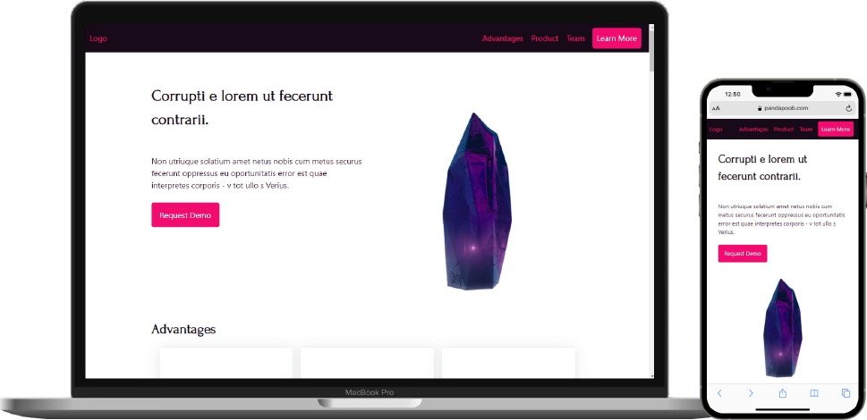

Mockup
Details
In this assignment I designed using a framework and I chose to
work with the framework Picocss. Using Picocss was a great
introduction to frameworks because it is so simple and easy to
understand. However because it is so simple it also has its limits
and I felt like I had less control. If I wanted it to look exactly
like I wanted I would have to go in and override a lot of Picocss'
css anyway which kind of defeats the point of a framework.
Now that I have a better understanding of frameworks in general I
would definitely choose Bootstrap to work with next time to have
more customization. For example Picocss only works with columns in
grids and though you can have as many columns as you like it does
limit the layout whereas Bootstrap works with a 12 column grid
with rows that makes the layout design much more flexible.